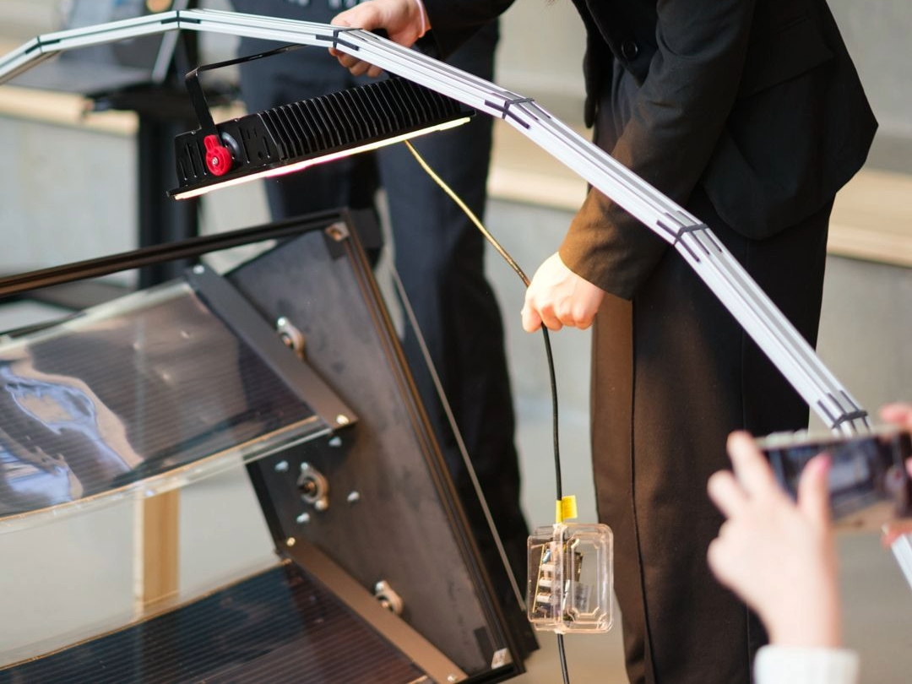
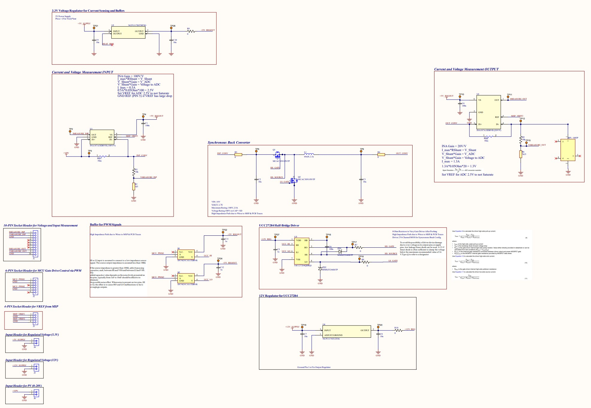
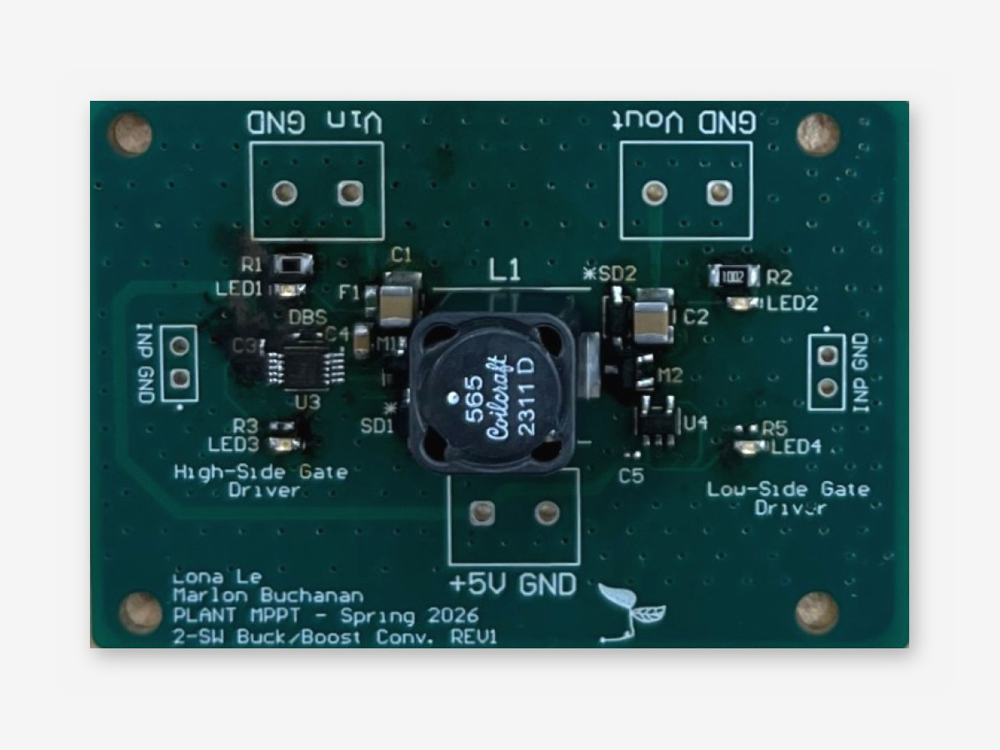
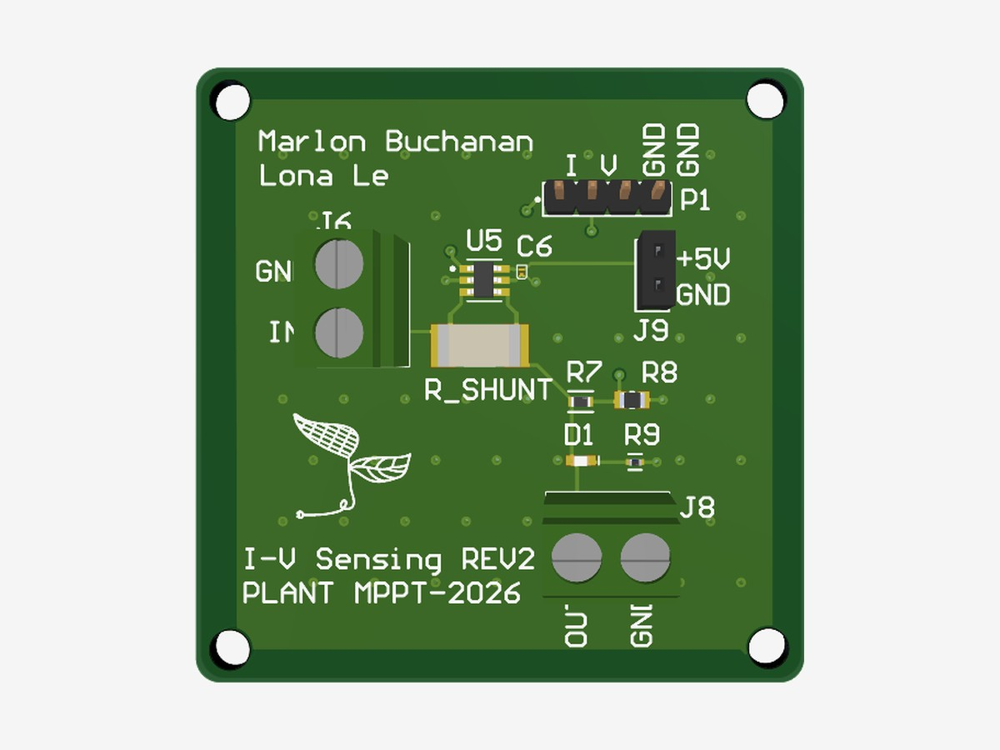
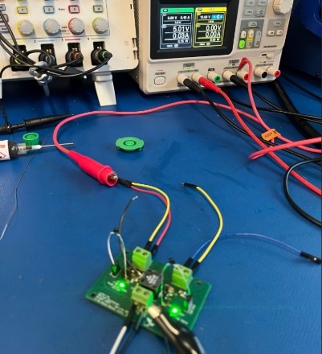
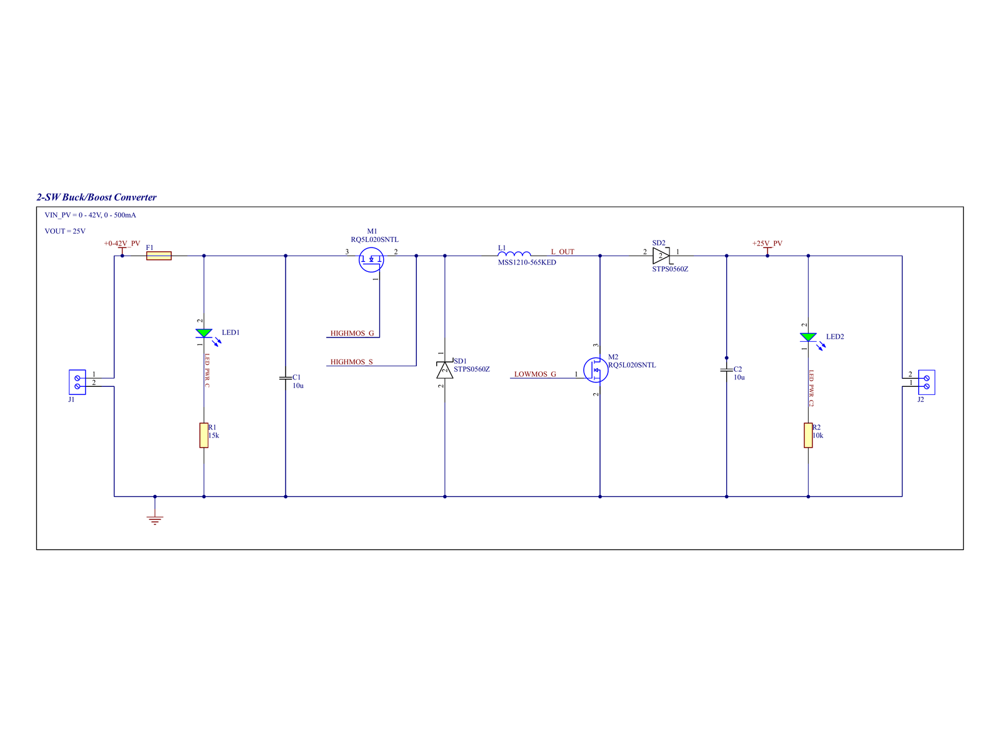
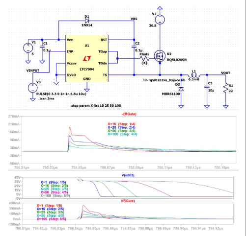
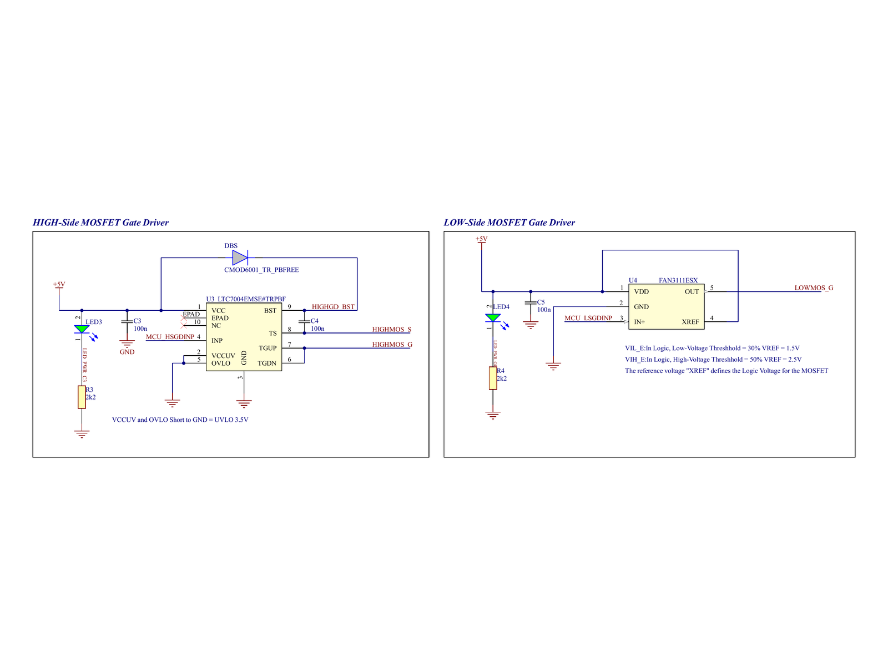
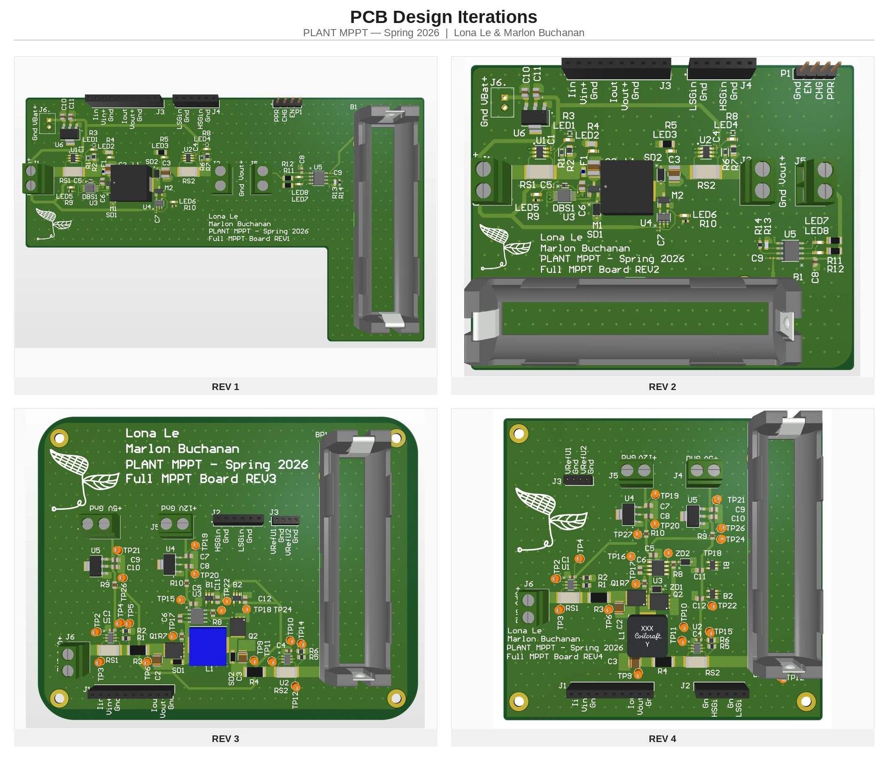
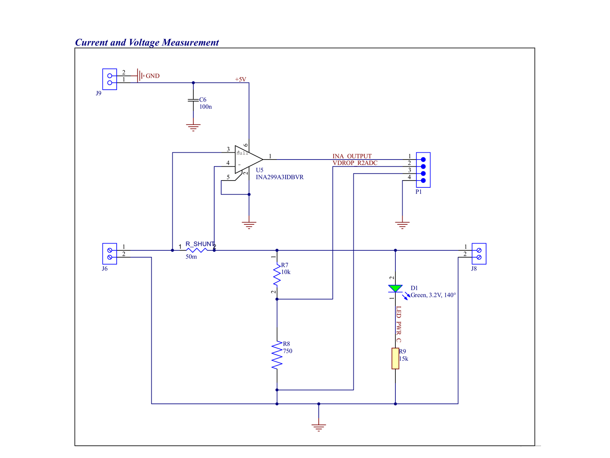

Maximum Power Point Tracking PCB
Capstone: Dynamic Solar Shading System (Team PLANT)
I led the electronics design for Team PLANT's capstone: a DC-DC converter with integrated voltage and current sensing that runs a maximum power point tracking (MPPT) algorithm to pull the most energy from organic solar panels.
The wider system was a proof-of-concept greenhouse shade that tilts solar panels to protect plants while the MPPT board harvests their power. Getting there took a failed first converter, a redesign, and a set of breakout boards for each subsystem.
- Role Electronics lead: schematic, layout, assembly, bring-up
- Team Team PLANT, SFU capstone
- When Spring 2026
- Tools Altium Designer, LTspice, PLECS, oscilloscope, DMM, signal generator








Highlights
- Designed a synchronous buck converter with integrated voltage and current sensing, from hand calculations through schematic, layout, and a working board
- Diagnosed a failed first design and led a full redesign to a simpler, cheaper half-bridge topology
- Laid out the board for staged bring-up: scope test points, accessible grounds, and 0‑ohm links to power each subsection on its own
- Built breakout boards for each subsystem (power stage, gate drivers, current and voltage sensing, battery charging) and hand-assembled 8+ boards in total
- Delivered voltage and current sensing within the 3.3 V ADC range, ready for MPPT firmware
Design Process

1. First design: buck-boost
The converter had to accept a variable input voltage from organic solar panels supplied by the ASCA Group. I had no prior PCB experience, so this was a deliberate deep dive into hardware, from circuit theory to a fully routed board.
The first design used a two-switch buck-boost topology with independent gate drivers. I hand-calculated the capacitor, inductor, MOSFET, and high-side gate drive values, taught myself Altium, and refined the layout with guidance from power electronics advisors.


2. The power stage on a breakout board
To bring the power stage up on its own, I put it on a dedicated breakout board. It takes 0–42 V from the panel at up to 500 mA and targets a 25 V output.
A high-side MOSFET with a freewheeling diode forms the buck half, and a low-side MOSFET with a boost diode forms the boost half. An LTC7004 in a 10-pin MSOP drives the high-side gate from a bootstrap supply, a FAN3111 drives the low side, and two headers let a microcontroller drive both gates with PWM.


3. Bring-up failure and diagnosis
The board failed during bring-up, most likely from solder bridging on fine-pitch parts during hand assembly. A second population failed the same way, which pointed at the high-side driver in its 10-pin MSOP package, through either routing or soldering.
The parts were expensive and a dead IC is hard to diagnose, so rather than keep reworking it I chose a full redesign.
4. Redesign: synchronous buck
The new board uses a synchronous buck topology with a half-bridge driver, which simplified the gate drive and cut cost.
I also designed it to be debuggable. Scope test points, easy ground references, and 0‑ohm resistor bridges let me bring up each subsection on its own before full power-on.


Sensing and Support Boards


Current and voltage sensing
I helped Lona Le develop the sensing board. Current is measured across a 50 mΩ shunt by an INA299A3 current-sense amplifier, and a 10 kΩ/750 Ω divider scales the panel voltage (up to 42 V) down to about 2.9 V for the microcontroller's ADC.
What I learned: design from the controller back
The parts were sound, but we chose a sensing circuit that worked rather than one sized for how the control loop would use it. The INA299A3 has a fixed gain of 100 V/V, so the 50 mΩ shunt gives 5 V per amp. That reads 2.5 V at 500 mA, but passes a 3.3 V ADC's range above about 0.66 A and approaches the 5 V rail near 1 A.
In an MPPT system that regulates input voltage, output current can swing well past its nominal value, which saturates the amplifier just when the controller needs the measurement. We also didn't plan for switching noise coupling in from the converter.
Today I'd start from the ADC range and the control loop: set the gain for the worst-case current, filter and clamp the amplifier output at the ADC, and keep the sense path away from the switch node. It was my biggest lesson in hardware/software co-design.

Battery charger
We also built a single-cell Li-ion charger board around a linear charging IC. It worked, but a linear charger burns most of the power in heat when it steps down from a high-voltage bus, so the final system charged the battery directly from the converter instead. Read the charger write-up →
Iterating on a four-month build
We revised several of these breakout boards, but with a four-month schedule and two-week PCB lead times, every spin had to count. We chose which boards to iterate on and carried the remaining lessons into the final design.
Skills Used
Power Electronics
Topology selection, component sizing, and PLECS simulation of buck-boost and synchronous buck converters.
Schematic Capture & Layout
Altium schematics and layouts for the converter, gate drivers, sensing, and charger boards, with LTspice verification.
PCB Bring-Up
Hand assembly, staged power-on, and debugging with oscilloscopes, DMMs, and signal generators.